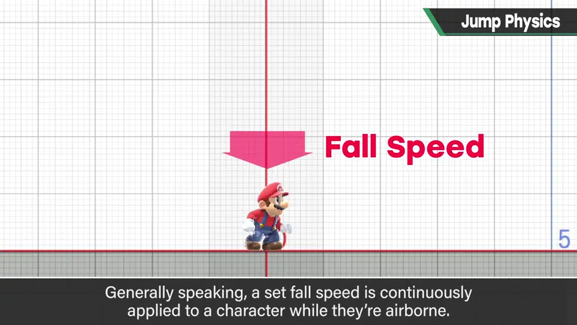
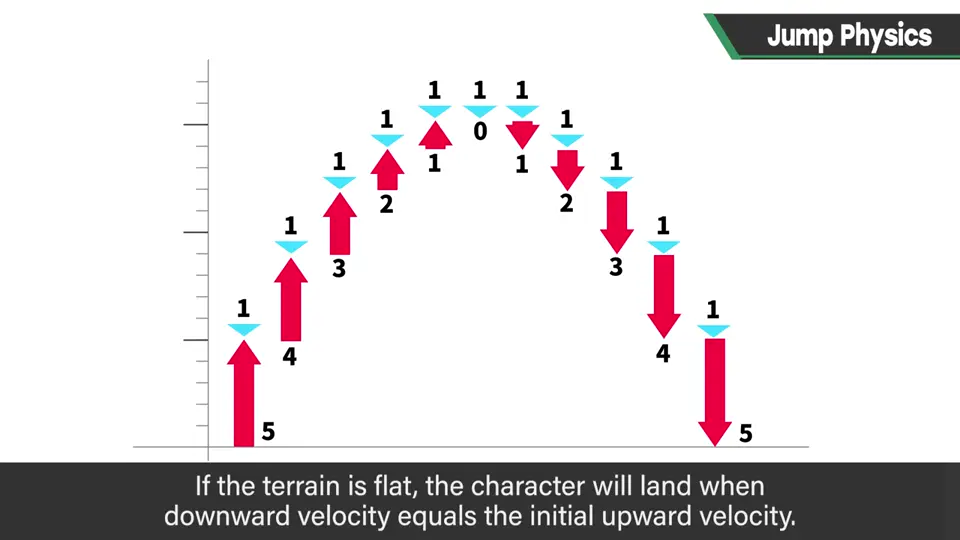
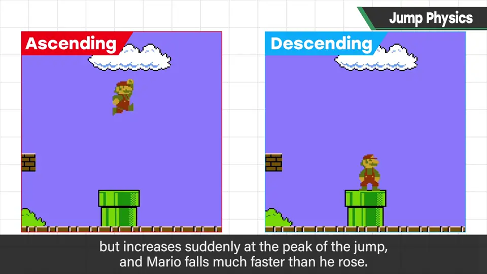
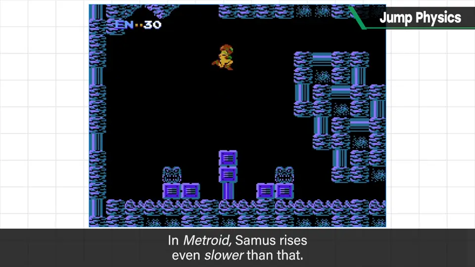
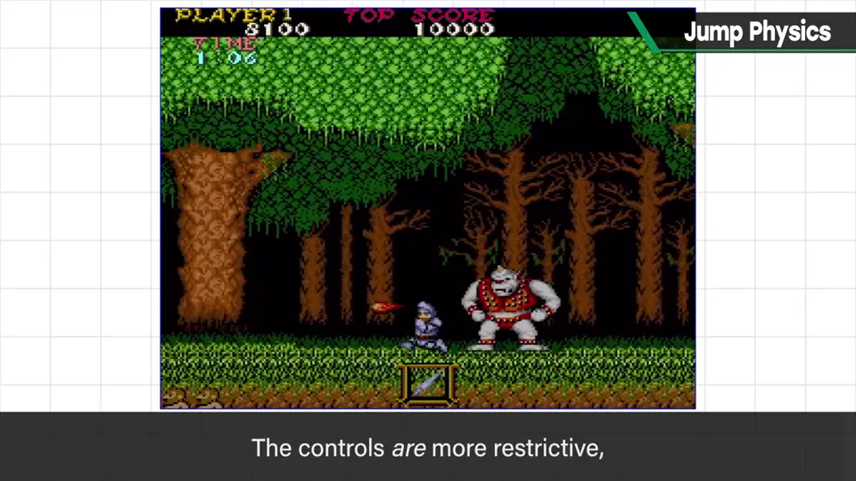
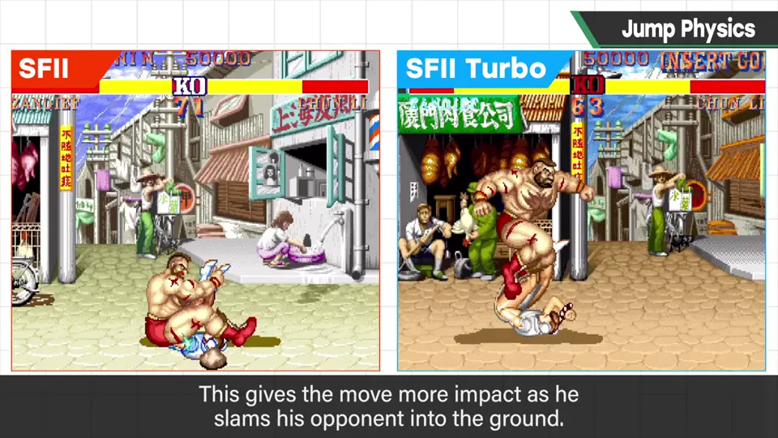
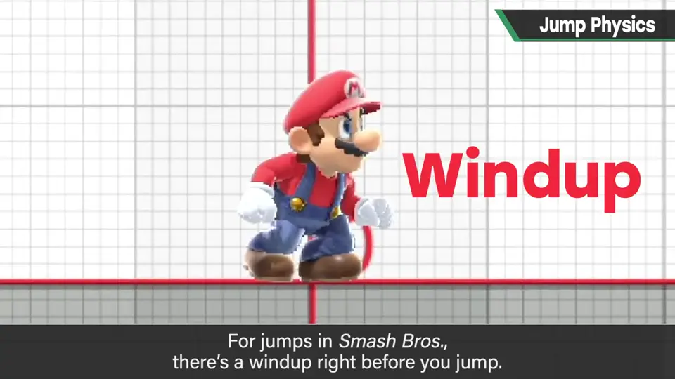
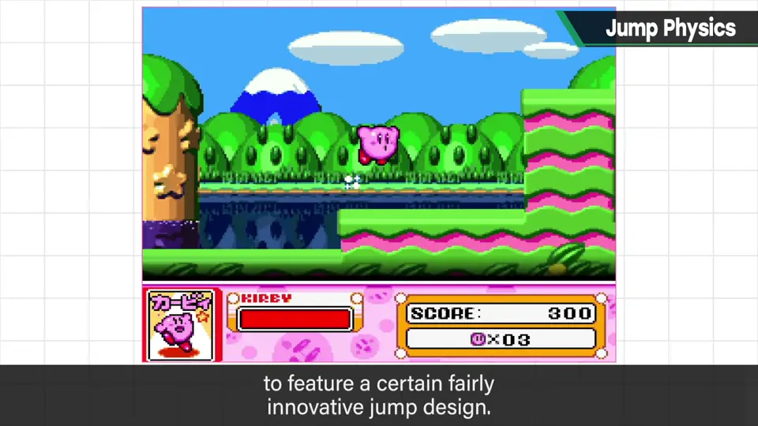
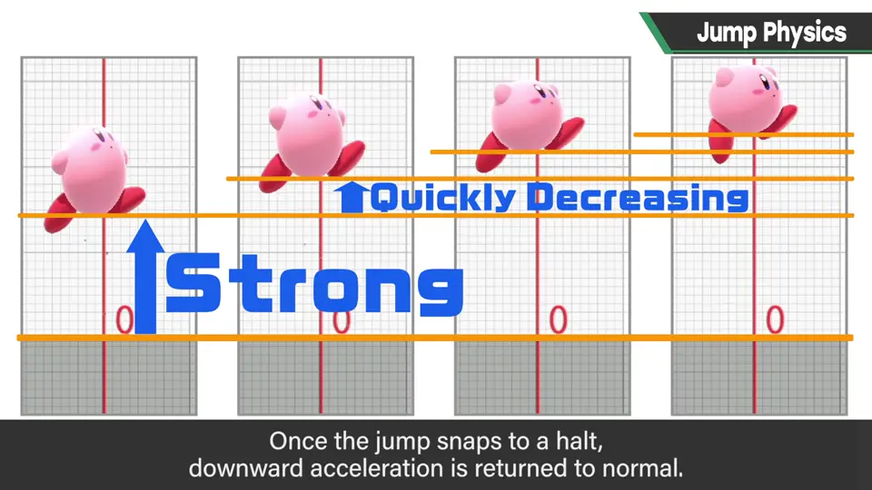

速览
角色跳跃是非常单纯的动作，但也有很多要考虑。程序上，一般是角色在空中时持续给予固定的下落加速度：先给向上速度（假设 5），空中每帧给 1 的下落加速度，于是速度 5→4→3→2…降到 0 后仍继续加速下落，1、2、3、4…平地上大约在速度回到起跳速度时落地。这是 Y 轴；X 轴（横向）多半保持当时速度或略微减速（实际也会设最高速度、惯性等）。这个跳跃规格应依游戏目的而变：《超级马里奥兄弟》上升较慢（下落加速度极低），但在顶点会急减速，下落比上升快得多，配合「按键时间改变高度」的规格很好操作。《银河战士》上升很慢、下落也偏慢，整体轻飘飘——也许是因为射击高度很重要，方便调整。《魔界村》跳得较低，空中几乎不能横移，起跳瞬间落点就确定：不自由，但产生了需要认真思考跳跃的游戏性，也能边退边打。《街头霸王 II》桑吉尔夫的螺旋打桩机，Turbo 以后下落比上升快，强化了猛砸对手的印象——轨迹完全相同，也能用速度改变手感。《大乱斗》跳跃前有起跳蓄力：以前不同斗士差别很大、张弛有度，现在几乎统一为较短时间；但若去掉，玩家来不及输入上 Smash 就会跳起来，所以不能为零。每次做《大乱斗》都会重新考虑是否需要跳跃，结论是需要，但规格每次略有不同。特别版久违地采用了《星之卡比 超级豪华版》也有的革新跳法：起跳时给极强的上升速度，并在数帧内也给极强的下落加速度，急减速后再恢复普通下落——为了让玩家反应稍慢也能应对。参数增多、规格变复杂、可能混入 bug，但张弛分明、容易使用。这种隐藏味道很难被察觉——一个跳跃也很深奥。
1. 跳跃的一般写法 0:04
角色跳跃是非常单纯的动作，但也有很多要考虑的事。程序上，一般是在角色处于空中时，持续给予固定的下落加速度。


先给一个向上的速度，假设是 5（单位随意）；空中每帧给 1 的下落加速度。于是以 5 上升的角色，下一帧速度变成 4，再下一帧 3、2，逐渐减慢；降到 0 后仍继续加下落加速度，于是一边加速一边下落：1、2、3、4……在平地上，大约在速度回到起跳速度时落地。
4→3→2→1→0"] --> C["继续加速下落
1→2→3→4→5"] --> D["着地"]
以上是 Y 轴（纵向）。X 轴（横向）移动多半保持当时的速度，或稍微减速。实际上还会设定最高速度、惯性等，这里只是粗略说明。
2. 依游戏目的改变跳跃 1:39
| 作品 | 跳跃特点 | 效果 |
|---|---|---|
| 《超级马里奥兄弟》 | 上升较慢；顶点急减速，下落远快于上升 | 配合「按键时长改变高度」，很好操作 |
| 《银河战士》 | 上升很慢、下落也偏慢，整体轻飘飘 | 射击高度很重要，也许为了方便调整 |
| 《魔界村》 | 较低；空中几乎不能横移，起跳时落点就确定 | 不自由，却产生需认真考虑跳跃的游戏性；可边退边打 |
| 《街头霸王 II》桑吉尔夫 螺旋打桩机 | Turbo 以后下落快于上升 | 更有力地把对手砸下去 |




3. 大乱斗的起跳蓄力 3:08
《大乱斗》的跳跃在起跳前有蓄力。以前不同斗士差别很大、张弛分明，现在几乎统一成比较短的时间。但若把它去掉，玩家来不及输入上 Smash 就会先跳起来，所以不能设为零。

每次做《大乱斗》时都会重新思考「真的需要跳跃吗」，结论是需要所以放进去，但规格每次都略有不同。
4. 隐藏的味道 3:36
《大乱斗 特别版》久违地采用了《星之卡比 超级豪华版》里也有的革新跳法。猜猜是什么？


参数增多、规格变复杂、还可能混入 bug，但张弛分明、容易使用。这种隐藏味道一般很难察觉——一个跳跃也很深奥，请多下功夫。
自测题
1. 一般的跳跃是怎么程序化的？
先给向上速度，空中每帧加固定下落加速度；平地上大约回到起跳速度时着地；X 轴大致保持速度。 0:21
2. 《魔界村》跳跃的特点及其带来的游戏性？
跳得低、空中几乎不能横移、起跳就确定落点；需要认真思考跳跃，也能边退边打。 2:24
3. 《大乱斗》的起跳蓄力为什么不能为零？
去掉的话玩家来不及输入上 Smash 就会先跳起来。 3:21
4. 特别版采用的「隐藏味道」跳跃是什么？目的？
开头给极强上升速度并在数帧内强烈减速，再恢复普通下落；让反应稍慢的玩家也能应对。 3:56